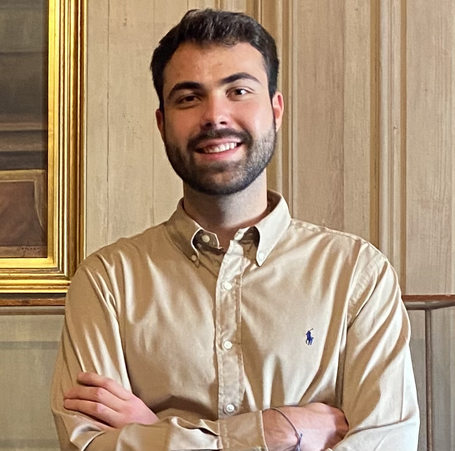
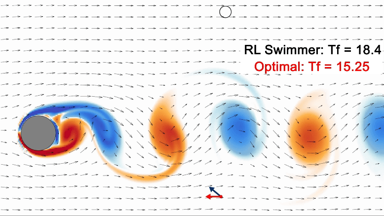
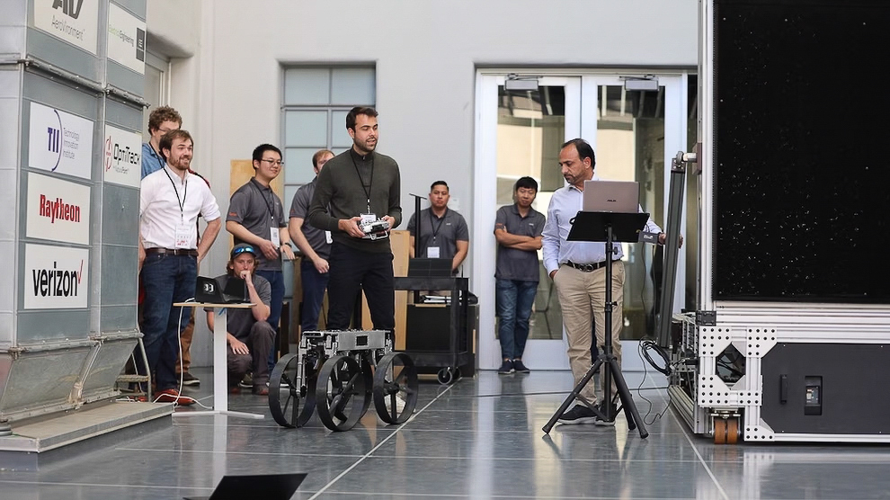

Ioannis Mandralis

PhD Candidate | Center for Autonomous Systems and Technologies | Caltech
About Me
I am a PhD Candidate at the Center for Autonomous Systems and Technologies (CAST) at Caltech, where I primarily work with Professor Morteza Gharib, and Professor Richard M. Murray.
My research focuses on developing aerial robots with non-trivial morphologies and a particular emphasis on multi-modal robots capable of dynamic transition between air and ground locomotion.
My work draws inspiration from the fields of control theory, robotics, machine learning, optimization, and aerodynamics.
I am a recipient of the Onassis Foundation Scholarship.
Before Caltech, I earned my Master Degree in Mechanical Engineering and Robotics from ETH Zurich in 2020 and a Bachelor Degree in Mechanical Engineering from EPFL in 2018.
During my time at ETH Zurich, I was fortunate to work with Professor Petros Koumoutsakos on deep reinforcement learning for control of soft swimming bodies.
I have also spent 6 months working as a Robotics Software Engineer at Anybotics (ETH Zürich spinoff) in Zurich.
Here I developed novel parameter estimation algorithms to improve walking performance of the quadruped robot Anymal.
Research
Multi-Modal Robotics
Design and testing multi-modal robots, such as the Aerially Transforming Morphobot (ATMO), capable of dynamically switching between aerial and terrestrial modes.

Mid-air robotic transformation leads to unexpected aerodynamic effects which I analyze using aerodynamic experimental testing and rigorous theory.
The findings are used to inform the control algorithms for smooth transition behaviours.

Relevant Publications
-
Mid-air Robotic Transformation for Dynamic Ground-Aerial Transition
Ioannis Mandralis, Reza Nemovi, Alireza Ramezani, Richard M. Murray, Morteza Gharib.
Under Review in Nature Communications Engineering, 2024.
-
Minimum time trajectory generation for bounding flight: Combining posture control and thrust vectoring
Ioannis Mandralis, Eric Sihite, Alireza Ramezani, Morteza Gharib.
Published in European Control Conference (ECC), 2023.
-
Demonstrating autonomous 3d path planning on a novel scalable ugv-uav morphing robot
Eric Sihite, Filip Slezak, Ioannis Mandralis, Adarsh Salagame, Milad Ramezani, Arash Kalantari, Alireza Ramezani, Morteza Gharib.
Published in IEEE/RSJ International Conference on Intelligent Robots and Systems (IROS), 2023.
Soft Robotics
For soft robots operating in fluid media the time variation of the body shape required to produce favorable behaviours are very complex to uncover using traditional control methods. I am working on using AI based methods for learning behaviours of such systems. An example is producing the maximum possible acceleration with a limited energy expenditure in swimming fish robots.
Soft aerial robotics for energetically efficient multi-modal flight. Currently developing a new concept for a flexible surface controlled by thrusters. Such a surface can improve agility and crash tolerance, while reducing energetic cost of locomotion.
Relevant Publications
-
Learning swimming escape patterns for larval fish under energy constraints
Ioannis Mandralis, Pascal Weber, Guido Novati, Petros Koumoutsakos.
Published in Physical Review Fluids, 2021.
AI for Control
I am actively investigating how AI can be used for control in situations when the system dynamics are too complex to model and control with standard approaches, and also for robotic explorers with partial information.

Relevant Publications
-
Learning efficient navigation in vortical flow fields
Peter Gunnarson, Ioannis Mandralis, Guido Novati, Petros Koumoutsakos, John O. Dabiri.
Published in Nature Communications, 2021.
Talks
Teaching
-
Optimal Control and Estimation (CDS112/Ae103b)
Caltech, Winter 2023. Professor: Richard M. Murray. -
Aerospace Control Systems (Ae103a)
Caltech, Fall 2023. Professor: Amir Rahmani (JPL). -
Control Systems II
ETH Zürich, Spring 2020. Professor: Roy Smith.
Media Coverage
We built a second version of ATMO (Aerially Transforming Morphobot) for our collaborators at the Technology Innovation Institute (Abu Dhabi). We demonstrated a package delivery mission in an outdoor environment. The result was covered by the TII media team. Learn more
We also presented ATMO at IROS 2024 (Abu Dhabi). The robot was covered by the national television channel Sky News Arabia. See media coverage.Gallery
